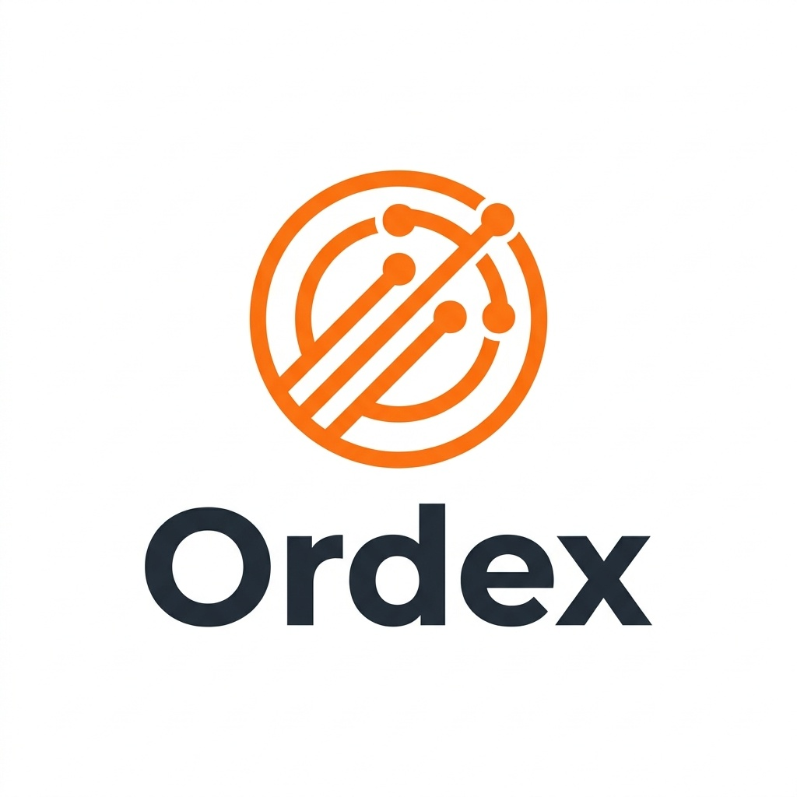
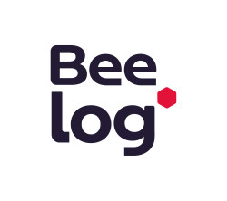
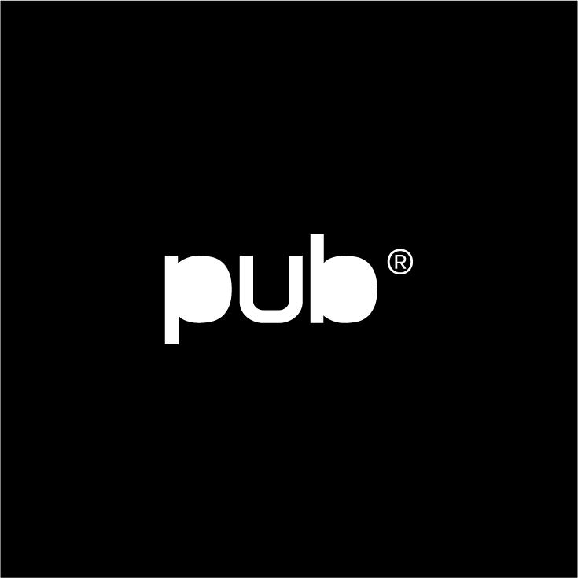

MINHAS ESPECIALIDADES.
Aplicações Web
Desenvolvo aplicações web modernas e eficientes, utilizando tecnologias como Python (Flask, Django), JavaScript (React, Next.js, TypeScript) e bancos de dados PostgreSQL e MySQL. Busco criar sistemas intuitivos, responsivos e escaláveis, garantindo uma experiência fluida para os usuários.
Automação de Processos
Especialista em RPA (Automação de Processos Robóticos), crio soluções que otimizam fluxos de trabalho e reduzem tarefas repetitivas. Utilizo Python, N8N para automação de workflows, Selenium para automação web e ferramentas de ETL para integrar dados e sistemas, tornando os processos mais rápidos e eficientes.
Análise de Dados
Transformo dados brutos em informações estratégicas, aplicando técnicas de ETL, modelagem de dados e visualização. Trabalho com Python, SQL e ferramentas de Business Intelligence para criar relatórios e dashboards que ajudam na tomada de decisões baseadas em dados.
HABILIDADES TÉCNICAS.
Linguagens de Programação
Frameworks & Bibliotecas
Banco de Dados
Cloud & DevOps
Automação & Ferramentas
Metodologias & Gestão
Competências Interpessoais
MINHA FORMAÇÃO ACADÊMICA.
Minha trajetória acadêmica reflete minha busca contínua por conhecimento e crescimento profissional. Sou graduado em Sistemas de Informação pela Universidade Tiradentes de Aracaju - SE, onde adquiri uma base sólida em desenvolvimento de software, arquitetura de sistemas, banco de dados e infraestrutura de TI. Durante a graduação, tive a oportunidade de aprofundar meu aprendizado em diversas áreas da tecnologia, desde programação full stack até automação de processos e análise de dados.
Além do aprendizado teórico, sempre busquei complementar minha formação com experiências práticas. Participei ativamente de projetos acadêmicos e profissionais que me permitiram aplicar meus conhecimentos em contextos reais, desenvolvendo soluções eficientes e inovadoras. Durante minha jornada universitária, também me dediquei ao estudo de Machine Learning, aprofundando-me em modelos supervisionados e na avaliação de algoritmos, o que fortaleceu minha capacidade analítica e técnica.
Estou sempre em busca de novos aprendizados e certificações que me permitam evoluir profissionalmente. Acredito que o conhecimento é a chave para o desenvolvimento de soluções inovadoras e impactantes, e é isso que me motiva a continuar aprendendo e me aprimorando constantemente.
MEUS PROJETOS.

Ordex - Sistema de Gestão de Restaurante
Sistema completo de gestão de restaurante com pedidos em tempo real via WebSocket. Inclui telas para garçom, cozinha, bar, caixa, gerente e clientes (mesas). Arquitetura full stack com autenticação JWT e comunicação em tempo real.
Outros Projetos

Beelog - Sistema Web
Sistema de gestão e monitoramento desenvolvido com Python (Flask) e React. Migração de PHP para Python com melhorias de performance.

The Public House - API & Frontend
Desenvolvimento de APIs RESTful com TypeScript e Node.js, interfaces interativas com Next.js e React.js.
Automação de Processos
Soluções de RPA com Python, N8N e Selenium para otimização de fluxos de trabalho e automação de tarefas repetitivas.
EXPERIÊNCIAS PROFISSIONAIS.
Jet Azul Patinete
Auxiliar de Logística / Mecânico I
Abr/2025 - Nov/2025
- Organização e gestão de pontos de distribuição de patinetes elétricos
- Troca e manutenção de baterias, garantindo disponibilidade operacional
- Atendimento promocional e suporte aos usuários do sistema
- Movimentação estratégica de patinetes para otimização de demanda
- Manutenção geral como Mecânico I: troca de peças, reparos elétricos e pintura
- Inspeção de segurança e controle de qualidade dos equipamentos
Beelog
Desenvolvedor Full Stack - PJ
Mai/2024 - Atualmente
- Desenvolvimento e manutenção de sistema web utilizando Python (Flask) e React
- Refatoração de código legado de PHP para Python com melhorias de performance
- Migração e ajuste de dados em ambiente AWS (RDS, S3, EC2)
- Monitoramento e controle de custos em AWS e Google Cloud Platform
- Implementação de melhorias e otimizações no frontend com React
- Suporte técnico ao cliente e resolução de problemas em produção
The Public House
Desenvolvedor Full Stack - PJ
Jan/2024 - Mar/2024
- Desenvolvimento de APIs RESTful com TypeScript e Node.js
- Configuração de rotas e implementação de middlewares de autenticação
- Criação de interfaces interativas com Next.js e React.js
- Validação de dados e tratamento de erros para garantir segurança
- Implementação de componentes responsivos e otimização de performance
- Integração frontend-backend com foco em UX/UI
Colaborativa
Estágio - Mentor Google Cloud
Fev/2023 - Dez/2023
- Mentoria em cursos Google Cloud Foundations e Cloud Engineer
- Auxílio na compreensão de conceitos de cloud computing e arquitetura GCP
- Gerenciamento de fóruns e comunidades de aprendizado
- Promoção de estudos colaborativos e resolução de dúvidas técnicas
- Avaliação de desempenho e acompanhamento do progresso dos alunos
- Suporte contínuo para certificação Google Cloud
Secretaria Estado Sergipe
Estágio - Suporte TI
Ago/2022 - Fev/2023
- Digitalização e preservação de documentos institucionais
- Alimentação e gestão de planilhas administrativas
- Suporte técnico a usuários e resolução de problemas em TI
- Manutenção preventiva e corretiva de equipamentos
- Configuração e manutenção de redes locais
- Otimização de processos administrativos e de tecnologia
KTCell Assist. Técnica
Técnico em Manutenção
Mar/2019 - Set/2022
- Manutenção preventiva e corretiva em dispositivos móveis e notebooks
- Substituição de telas, baterias e componentes eletrônicos
- Reparos em placas eletrônicas com uso de solda e equipamentos especializados
- Formatação e instalação de sistemas operacionais (Android, iOS, Windows)
- Instalação e configuração de softwares e aplicativos
- Atendimento ao cliente com foco em qualidade e eficiência
Ferreira Costa
Auxiliar de Auditoria
Jul/2015 - Jun/2016
- Controle e auditoria de estoques com sistemas de gestão
- Auditoria de cargas em caminhões de entrega
- Realização de inventários periódicos e análise de divergências
- Auditoria de preços e ajustes de estoque
- Verificação de produtos recebidos e conferência de notas fiscais
- Implementação de melhorias nos processos de controle de qualidade
Transvalente Logística
Auxiliar Administrativo
Ago/2012 - Jul/2015
- Monitoramento de cargas via sistemas GPS e rastreamento
- Controle de abastecimento e gestão de custos operacionais
- Roteirização de viagens para otimização de entregas
- Gerenciamento de notas fiscais e documentação de cargas
- Coordenação do fluxo de entrada e saída de mercadorias
- Preenchimento de relatórios operacionais e análise de indicadores
MRM Construtora
Auxiliar Administrativo
Jul/2011 - Out/2011
- Controle de estoque de materiais de construção
- Liberação de materiais para obras e equipes
- Manutenção preventiva de maquinário e equipamentos
- Gestão de requisições de equipamentos para projetos
- Realização de inventários e identificação de divergências
- Implementação de medidas corretivas para otimização de processos
Rede Conecta
Almoxarife
Abr/2010 - Dez/2010
- Controle de estoques e inventários regulares
- Recebimento, conferência e liberação de materiais
- Coordenação de equipe do almoxarifado
- Gerenciamento de EPIs e equipamentos de segurança
- Utilização de sistemas Sico, Microsiga e CDV para gestão
- Organização e otimização de processos logísticos internos